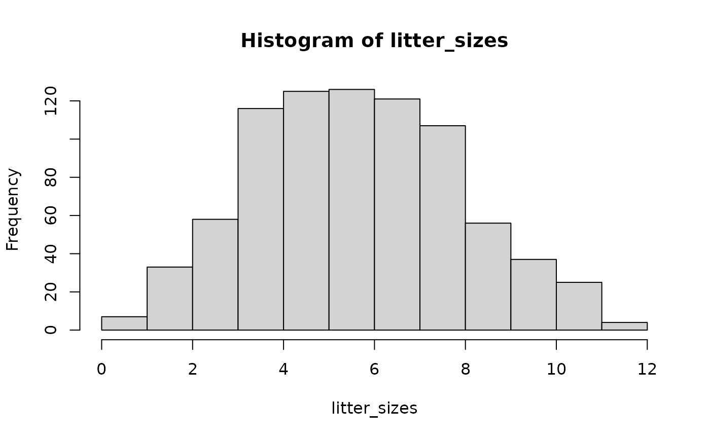

Skewness
skewness.RdComputes the skewness, \(\gamma_{1}\), of the values in x with optional adjustment to
give \(G_{1}\), the expected populaton value of skewness from a sample.
Details
Moments for samples of size n are given by: -
$$m_{r} = \displaystyle \frac{\sum \left(x - \overline{x} \right)^{r}}{n}$$
The skewness (or skew) \(\gamma_{1}\) of a numeric variable is the third moment about the mean rendered dimensionless by dividing by the cube of the square root of the second moment: -
$$\gamma_{1} = \displaystyle \frac{m_3}{{\sqrt{m_{2}}}^3}$$
The expected population value of skewness \(G_{1}\) from a sample is obtained using: -
$$G_{1} = \displaystyle \frac{\sqrt{n(n - 1)}}{n-2}\gamma_{1}$$
skew is an alias for skewness().
(Adapted from Crawley, 2012, and Joanes and Gill, 1998.)
References
Crawley, Michael J. (2012) The R Book. John Wiley & Sons, Incorporated. ISBN:9780470973929. p.350-352. doi:10.1002/9781118448908
Joanes, D.N., and Gill, C.A. (1998). Comparing measures of sample skewness and kurtosis. Journal of the Royal Statistical Society. Series D (The Statistician) 47(1): 183–189. doi:10.1111/1467-9884.00122
See also
Other skewness:
kurtosis(),
kurtosis.test(),
skewness.test()
Examples
## Heights of 100 randomly selected male university students, adapted from Spiegel and Stephens
## (Theory and Problems of Statistics. 4th edn. McGraw-Hill. 1999. ISBN 9780071755498).
table(heights)
#> heights
#> 61 64 67 70 73
#> 5 18 42 27 8
hist(heights, seq(59.5, 74.5, 3))
skewness(heights)
#> [1] -0.1098084
skewness(heights, adjust = FALSE)
#> [1] -0.1081544
## Litter sizes in albino rats (n = 815), data from King (1924; Litter production and
## the sex ratio in various strains of rats. The Anatomical Record 27(5), 337-366).
table(litter_sizes)
#> litter_sizes
#> 1 2 3 4 5 6 7 8 9 10 11 12
#> 7 33 58 116 125 126 121 107 56 37 25 4
hist(litter_sizes, 0:12)

skewness(litter_sizes)
#> [1] 0.173038
skewness(litter_sizes, adjust = FALSE)
#> [1] 0.1727193